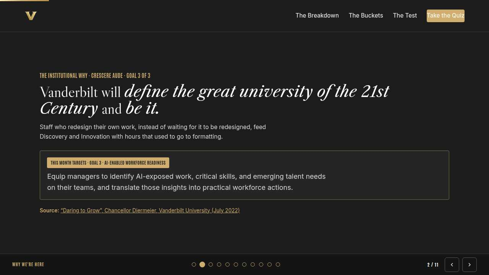
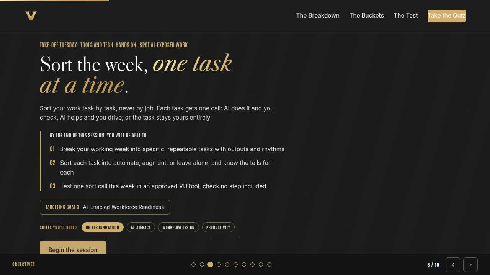
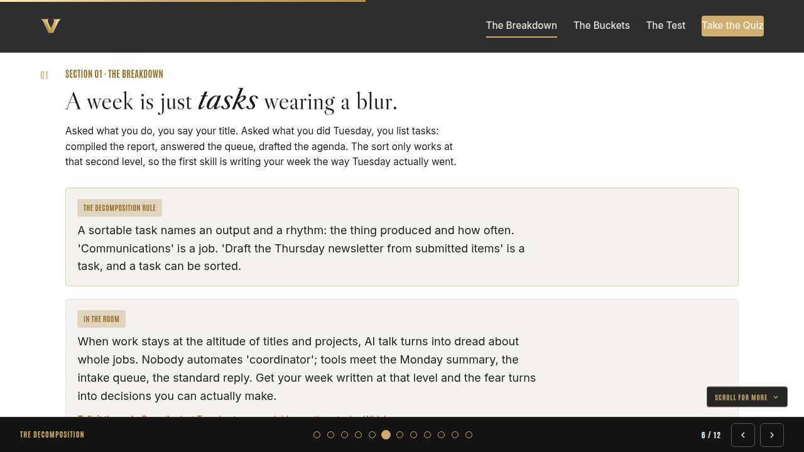
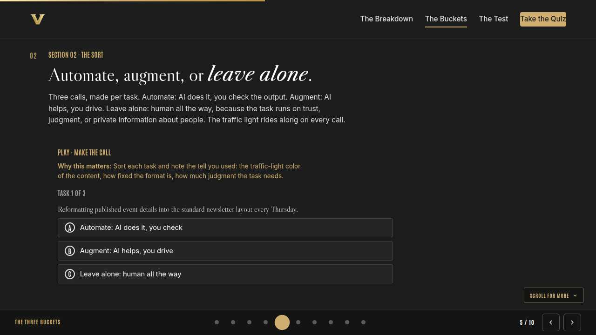
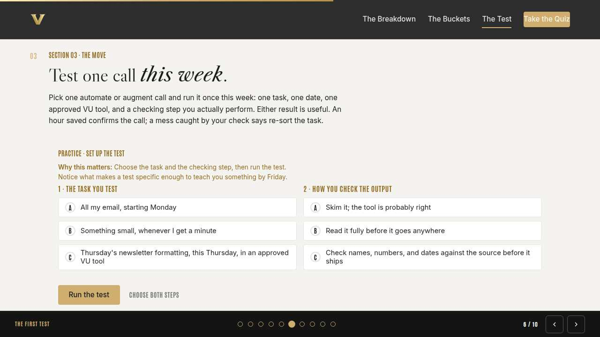
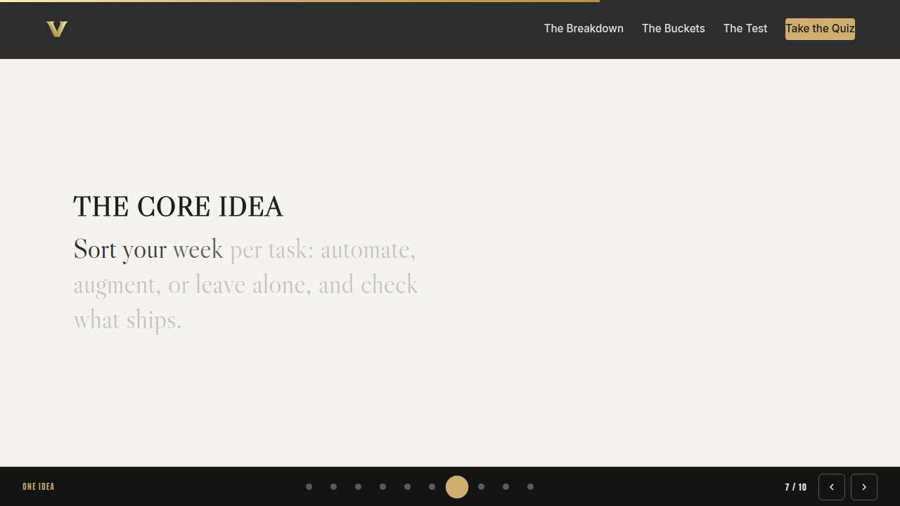
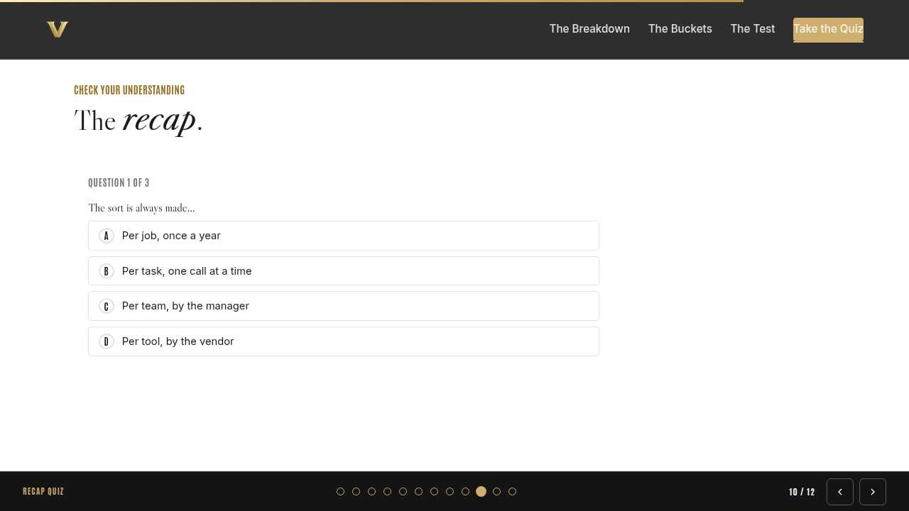
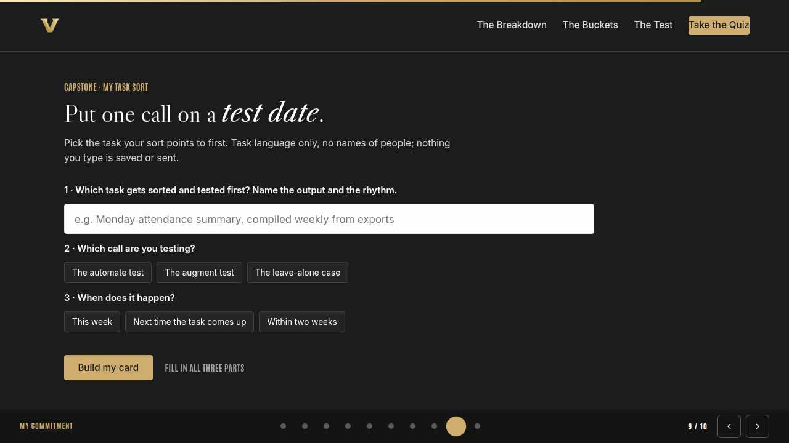
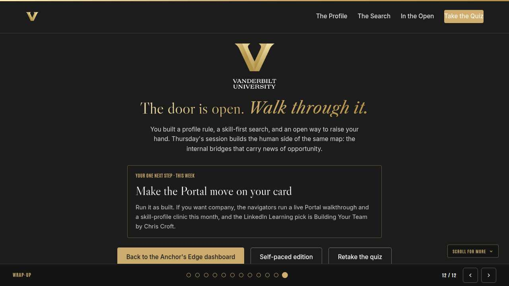

Vanderbilt · Anchor's Edge · ATD facilitator guide · print edition
The Task Sort, the facilitator guide

Run of show
| Screen | Full (min) | Core (min) |
|---|---|---|
| Welcome / QR | 2 | 1 |
| Why we're here | 2 | 1 |
| Objectives | 2 | 1 |
| The decomposition | 9 | 6 |
| The three buckets | 11 | 8 |
| The first test | 9 | 6 |
| The core idea | 1 | skip |
| Recap quiz | 4 | 3 |
| Capstone commitment | 4 | 3 |
| Closing | 1 | 1 |
| Total | 45 | 30 |
The goal this month serves
Goal 3, AI-Enabled Workforce Readiness.
Audience
All Vanderbilt staff in the Anchor's Edge weekly rhythm; no management experience assumed. Works for 6 to 40 on a call; breakouts run in pairs. No prerequisites; April is the Spot AI-Exposed Work month.
Room setup
Virtual, instructor led: camera on, deck link in chat, breakouts of 2 available. Learners follow on their own screens via the welcome-slide link or QR. Nothing typed into the deck is saved or sent.
Materials
- Meeting platform with screen share and breakout rooms; deck link ready to paste in chat
- Facilitator machine with the facilitator edition open; notifications off
- Learners on their own devices with the learner link
- Chat open for share-outs; the capstone copy button pastes there cleanly
A week before
- Run the learner edition start to finish and do every interaction honestly; you will demo at least one live.
- Read this month's theme page on the Anchor's Edge dashboard so the goal tie-in is fluent.
- Send the invite with the learner link and one line on what to bring.
The day before
- Test screen share with the facilitator edition; confirm the notes rail is readable.
- Open the learner link on a second device; the QR must land there.
- Run the section interactions once so you can drive them without reading.
30 minutes before
- Welcome slide up as people join; link pasted in chat.
- Close every other tab; silence the machine.
- Breakout rooms pre-configured in pairs.
When things go sideways
If Screen share or the site fails mid-session: Paste the learner link in chat and narrate from your own browser; every interaction runs on learner devices without the share.
If Breakout rooms are unavailable: Run the breakout prompts as 60-second chat storms: everyone types their answer at once, you read the best three aloud.
If Someone asks which specific AI tools are approved right now: Point to the approved VU tools list on the Anchor's Edge dashboard rather than reciting from memory; the list moves, the traffic light does not.
If Someone insists their whole job should be left alone: Agree that plenty of it may be, then ask for their most repetitive task and sort just that one together. One honest call usually unlocks the rest.
Tough questions, ready answers
Q: If I automate parts of my job, am I automating myself out of it?
The sort is per task, and no job is one task. Staff who can decompose, sort, and check their own work are exactly what Goal 3 calls workforce readiness; the freed hours move to the augment and leave-alone work where your judgment shows. The risk sits with unsorted weeks, and yours is sorted.
Q: My manager hasn't said anything about AI. Should I wait?
Sorting your own week needs nobody's permission, and testing inside approved VU tools on green and yellow work is already within the rules. Share your sort with your manager afterward; Monday's session gave them a team-level version of this exact map, so you will be speaking the same language.
Q: How do I know if a task is yellow or red?
Ask what the content is about. Internal but institutional, like meeting notes or draft plans: yellow, approved VU tools only. About an identifiable person, their health, performance, or circumstances: red, never. When a task mixes both, the red parts come out before any tool sees it, or the whole task stays human.
Copy-paste templates
Pre-work invite (paste into the calendar invite)
Subject: Tuesday, 45 minutes on sorting your week before AI sorts it for you. Bring a rough sense of what last Tuesday was made of: the tasks, the outputs, the rhythms. Live and interactive; have the session link open on your own screen.
7-day pulse (send one week after)
Subject: Did the test run? Three lines, reply whenever: 1) Did the test on your card run, in an approved VU tool? 2) What did it teach you about the call you made? 3) Which task gets sorted next?
After the session
Seven days out, send the pulse: 'Did the test on your card run? What did it teach you about the call? Which task gets sorted next?' Count of completed tests is the Level 3 metric for the month.
Welcome / QR Full 2 min · Core 1
Get everyone into the deck on their own screen and set the tone: 45 minutes, live, hands on.
Say
“Welcome to Take-Off Tuesday. Scan the code or click the link in chat so this session runs on your screen too. Forty-five minutes, one focus: Task-decomposition: automate, augment, or leave alone.”
Do
- Slide up as people join; link pasted in chat every few minutes.
- State the norm once: type into your own screen, nothing you enter is saved or sent.
Watch for: People lurking without the deck open. The interactions only land if the deck is on their screen.
Transition: “Before the topic, thirty seconds on why Vanderbilt is asking for this hour.”

Why we're here Full 2 min · Core 1
Anchor the session in the Chancellor's charge and name the goal this month serves, inside one minute.
Say
“One sentence from the Chancellor sits over everything we do: Vanderbilt will define the great university of the 21st Century and be it. Staff who redesign their own work, instead of waiting for it to be redesigned, feed Discovery and Innovation with hours that used to go to formatting. This month serves Goal 3, AI-Enabled Workforce Readiness.”
Do
- Read the mission line slowly, once; name the goal, once.
- No discussion here; the whole slide is under a minute.
Transition: “Here is what you will be able to do in 45 minutes.”

Objectives Full 2 min · Core 1
Set the contract for the session in about a minute; this slide is also the roadmap.
Say
“By the end of this session you will be able to: break your working week into specific, repeatable tasks with outputs and rhythms; sort each task into automate, augment, or leave alone, and know the tells for each; test one sort call this week in an approved vu tool, checking step included. We take them in order, and each one has something to practice.”
Do
- Read the three objectives briskly; they double as the agenda.
- Point at the goal chip once, then move.
Transition: “First objective.”

The decomposition Full 9 min · Core 6
Teach staff to turn the blur of a week into named tasks with outputs and rhythms.
Say
“This month is about seeing what is changing in your work before it changes you, and the unit of change is never the job title. It is the task. So before any talk of AI, we do something older: write down what your week is actually made of, the way Tuesday actually went.”
Do
- Read the lead, then bring up the In the room card and let it land for a beat.
- Run the discussion prompt: last Tuesday as three tasks. Take two or three voices on what was hardest to name.
- Run the breakout: three real tasks, specific enough to picture.
Ask
“Why is it strangely hard to list your own tasks?”
Expect:
- We think in job titles and projects
- Routine work goes invisible
- Some will say their week never repeats
Respond: If a week truly never repeats, sort the parts that do: nearly every role carries a repeating core, and that core is where the sort pays off first.
Debrief: A sortable task has an output and a rhythm. That is the whole test, and most weeks hold ten of them once you look.
Watch for: People writing job descriptions instead of tasks. Redirect: what did you produce, and how often does that repeat?
Transition: “Tasks on the table. Now each one gets a call.”
Core path: Core: skip the breakout; ask for one real task in chat instead.

The three buckets Full 11 min · Core 8
Install the three calls and their tells, with the traffic light riding along on every sort.
Say
“Three calls, and you make them per task, never per job. Automate: AI does it and you check every output. Augment: AI helps and you drive. Wharton's Ethan Mollick calls that pairing centaur work, a clear line with the tool on one side and your judgment on the other. Leave alone: human all the way. And every call rides the traffic light we share all year: green is public or generic, go; yellow is internal, approved VU tools only; red is private information about people, never.”
Do
- Run Make the call live; everyone plays on their own screen.
- After the health-situation task, pause: ask why leave alone is the only call there.
- Run the breakout: one task, one call, one challenge question.
Ask
“Which bucket do you expect will be smallest when you sort your own week?”
Expect:
- Many guess automate is small
- Some fear the leave-alone pile is shrinking
- A few will say they have no idea yet
Respond: Most weeks sort mostly into augment, and the leave-alone pile is where your distinctly human value lives. Naming it is worth as much as the automation.
Debrief: Fixed format on public content leans automate. Internal drafting leans augment in approved VU tools. Trust, judgment, and people data stay human.
Watch for: Anyone treating leave alone as failure or the lesser bucket. Reframe it: that pile is the case for the human in the role.
Transition: “Calls made in your head are cheap. One of them earns a test.”
Core path: Core: run the trainer, skip the breakout, take one voice on the debrief question.

The first test Full 9 min · Core 6
Convert one sort call into a specific, checked, dated test in an approved VU tool.
Say
“A sort only changes your week once you test a call. The test has four parts: one task, one date, one approved tool, and a checking step with names on it. We are going to build that test now, and the checking step is the part people skip and regret.”
Do
- Run Set up the test; give the room two minutes for both choices.
- Ask one volunteer to read their outcome aloud, weak or strong.
- Point at the pattern: named task, named day, named check.
Ask
“Why does the checking step stay even when the tool has been right ten times in a row?”
Expect:
- The eleventh time is the one that ships wrong
- The check is what makes automate safe
- The output still carries your name
Respond: Right. Automate never means unattended. The output ships under your name, so the check is part of the task, permanently.
Debrief: The test formula: one task, one date, one approved tool, one named check. Small enough to run, real enough to teach.
Watch for: Big-bang testers trying to automate a whole workflow at once. Shrink it: one task, this week.
Transition: “Quick recap, then your own test goes on a card.”
Core path: Core: everyone runs the builder solo; skip the read-aloud.

The core idea Full 1 min · Core skip
Land the one sentence the session exists to install.
Say
“If you keep one sentence from today, this is it. Read it once, out loud: Sort your week per task: automate, augment, or leave alone, and check what ships.”
Do
- Pause two beats after reading; the word animation carries it.
Transition: “The recap makes it stick.”
Core path: Core: pass through in stride; the sentence reads itself.

Recap quiz Full 4 min · Core 3
Score the learning while it is fresh; wrong answers are teaching moments, not failures.
Say
“Three questions, on your own screen. Answer honestly; the explanations are where the learning sticks.”
Do
- Give the room 90 seconds to run it individually.
- Ask for a show of results in chat: how many got 3 of 3?
- Read out the explanation for whichever question drew the most misses.
Watch for: Rushing past the why lines. The explanations carry the teaching.
Transition: “Now point it at your real week.”

Capstone commitment Full 4 min · Core 3
Convert the session into one named, dated action per person.
Say
“Now make it real. One task from your actual week, the call you are testing, and the window it runs in. Task language only, no names of people. Build the card and copy it somewhere you will see it before the task next comes up. Two minutes, quiet, go.”
Do
- Two quiet minutes; everyone builds their own card.
- Invite two or three volunteers to read their card aloud or paste it in chat.
- Remind: copy the card somewhere you will see it this week.
Watch for: Vague entries. Nudge for a name-able situation and a real date.
Transition: “Last slide.”

Closing Full 1 min · Core 1
End with the next step and where this thread continues.
Say
“You leave with your week in pieces and one test on the calendar, which is exactly where this month wants you. Thursday's Thrive Thursday gives you the other half of the skill: critical thinking that sorts AI hype from real value, so the claims about the next shiny tool meet three sharp questions before they meet your workflow. See you Thursday.”
Do
- Point at the next-step card; one sentence.
- Name the rest of the week's rhythm: the other sessions echo this month's theme.
Generated from facilitator/notes.json. The on-screen facilitator edition lives at ./ alongside this guide.